System Requirements
Before proceeding with the installation, ensure that your system meets the following requirements:
PHP Requirements (Laravel-specific)
- PHP >= 8+
- BCMath PHP Extension
- GD Extension
- Ctype PHP Extension
- Fileinfo PHP extension
- JSON PHP Extension
- Mbstring PHP Extension
- OpenSSL PHP Extension
- PDO PHP Extension
- Tokenizer PHP Extension
- XML PHP Extension
Installation On Local
Follow these steps to successfully install on your localhost (XAMPP/LAMP/WAMP):
Step-01: Extract ZIP and Place Files
- Extract the main installation files from the downloaded archive.
- Move the extracted files to your local server's www directory (for WAMP) or htdocs directory (for XAMPP).
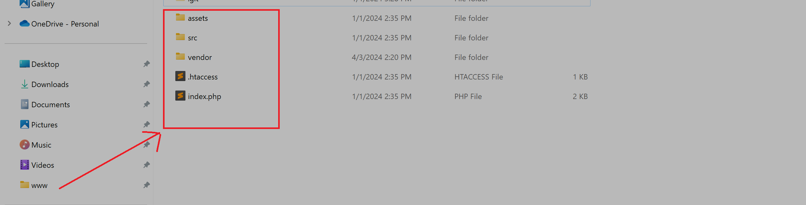
Step-02: Create a Database
- Open web browser and navigate to phpMyAdmin.
- Create a new database that will be used by application.
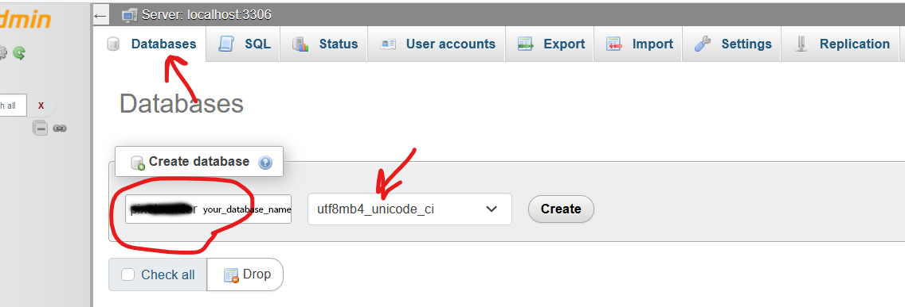
Step-03: Access the Installation Wizard
- Launch your web browser.
- Enter the following URL in the address bar: http://localhost/myscript (replace myscript with the appropriate folder name you used in your localhost server).
Step-04: Installation Process
- The installation wizard will load, checking if your server meets the requirements. Make sure your server meets all the requirements listed.
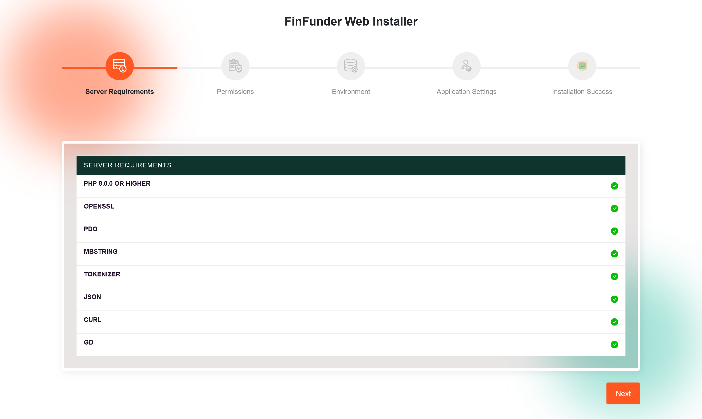
- Grant the Necessary Permissions.
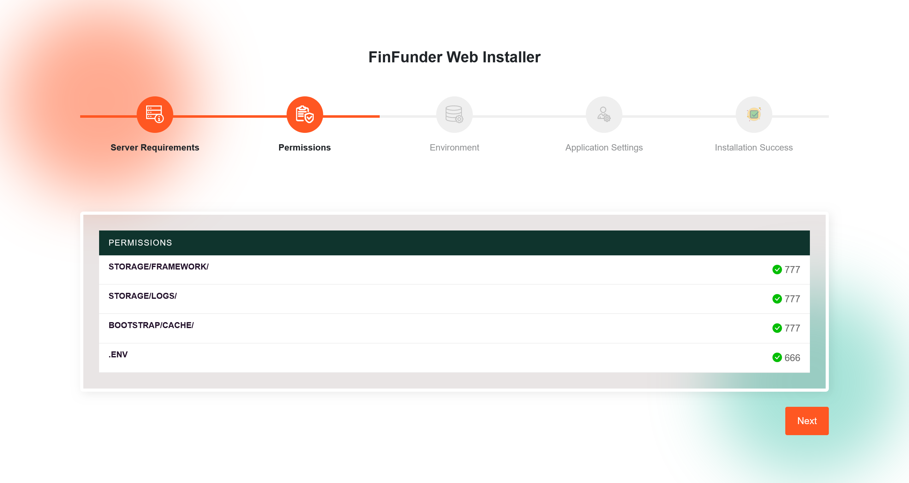
- Configure the Environment: Define App Name, Base URL, Database Details, and Access Credentials as established in the previous step for continued setup.
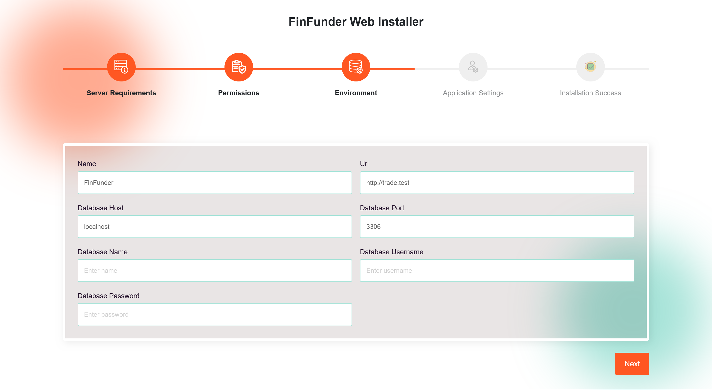
- After establishing a successful database connection, proceed to create an administrator account by providing the following information for the next step.
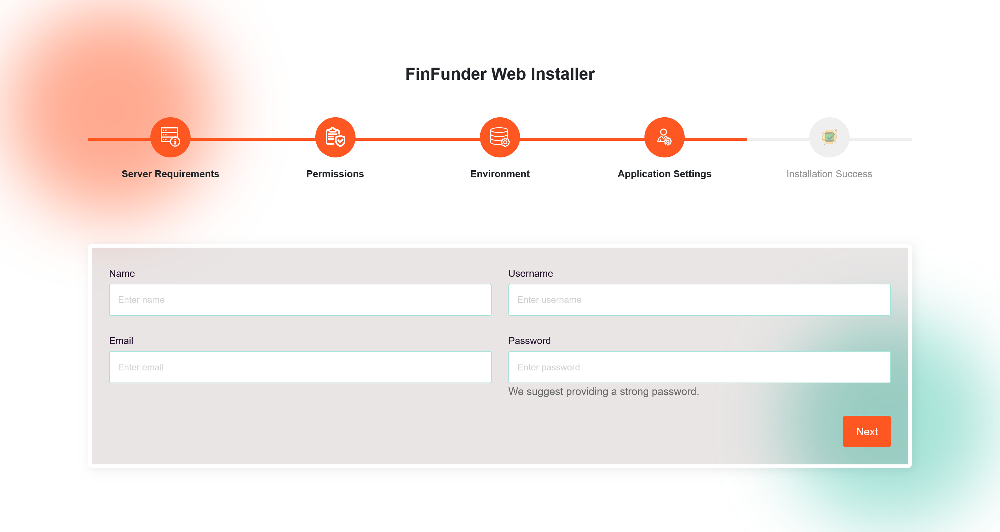
- Installation Successful! Upon receiving a success message. You can now enjoy FinFunder script and here you can Access Admin Panel | User Panel | Frontend Panel
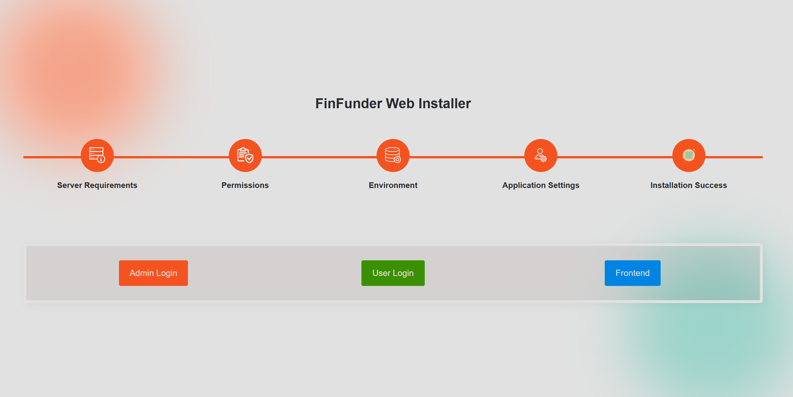
Installation On Server
Follow these steps to successfully install on your server (Apache |
Nginx) using any webpanel (cPanel | hPanel | Plesk | CloudPanel | aPanel):
Step-01: Extract ZIP and Place Files
- Extract the main installation files from the downloaded archive.
- Transfer the extracted files to the www directory on your server, ensuring placement within the public_html folder as per your panel's structure. Here's the hPanel given screenshot
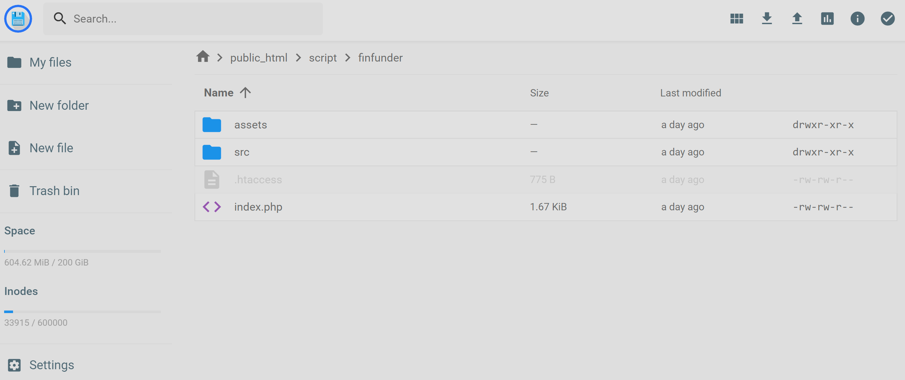
Step-02: Create a Database
- Navigate to the 'Database' section in hPanel and access the database wizard to create a new database, along with database user and password.
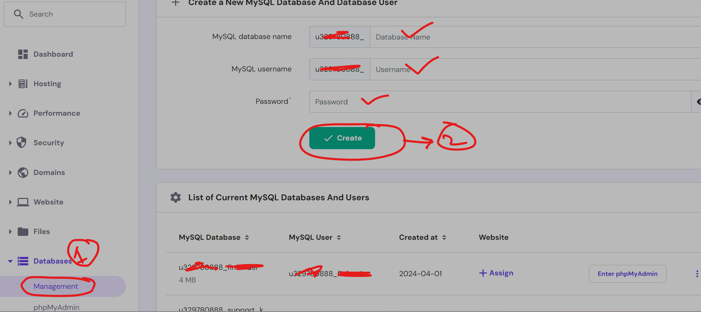
Step-03: Access the Installation Wizard
- Launch your web browser.
- Enter the following URL in the address bar: https://{{your domain}} (replace myscript with the appropriate folder name you used in your server).
Step-04: Installation Process
- The installation wizard will load, checking if your server meets the requirements. Make sure your server meets all the requirements listed.
- Grant the Necessary Permissions.
- Configure the Environment: Define App Name, Base URL, Database Details, and Access Credentials as established in the previous step for continued setup.
- After establishing a successful database connection, proceed to create an administrator account by providing the following information for the next step.
- Completion Successful! Upon receiving a success message. You can now enjoy FinFunder script and here you can Access Admin Panel | User Panel | Frontend Panel
Update Process
Follow these steps to successfully update on your locally or server (Apache |
Nginx) using any webpanel (cPanel | hPanel | Plesk | CloudPanel | aPanel):
Step-01: Extract ZIP and Place Files
- Extract the main update files from the downloaded archive.
- Transfer the extracted files to the www directory on your local or server, ensuring placement within the public_html folder as per your panel's structure. Here's the hPanel given screenshot
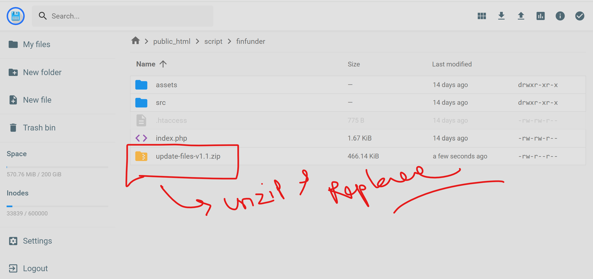
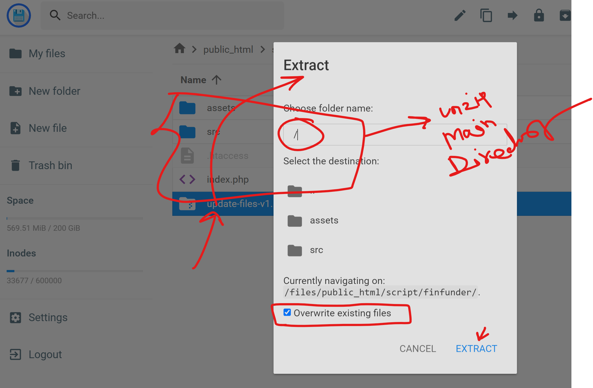
- Now For this version 1.1 you have to put a Key in .env file
APP_CURRENT_VERSION=
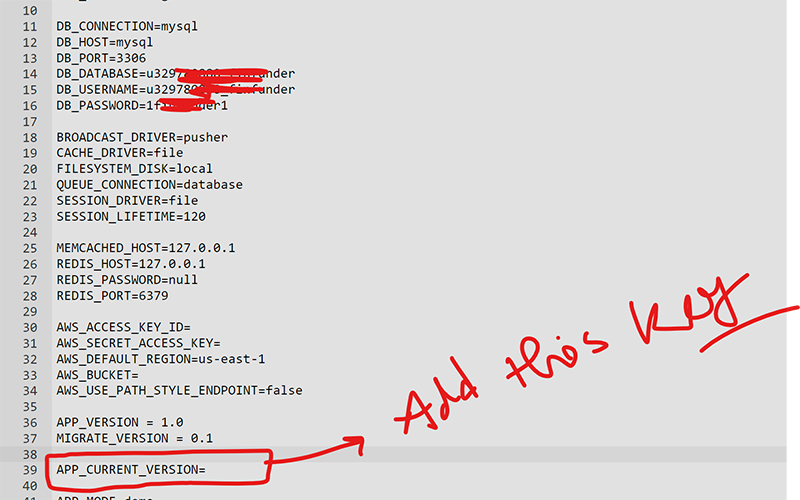
Step-02: Cache Clean & Enter In Update
- Navigate to 'Menu' and select 'Cache Clean'.
- Click on 'Application Settings' located at the bottom of the page.
- Scroll down to find the 'System Update' features.
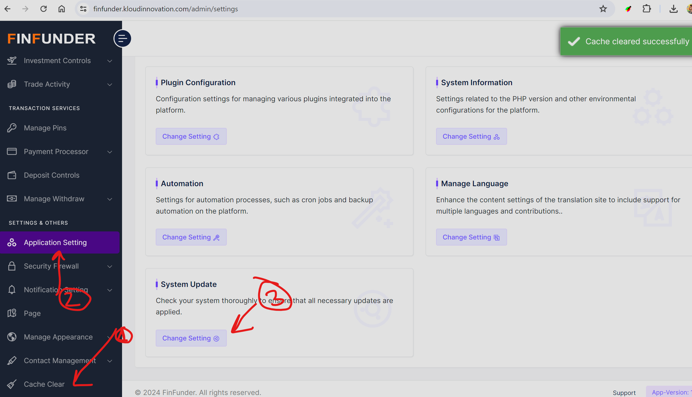
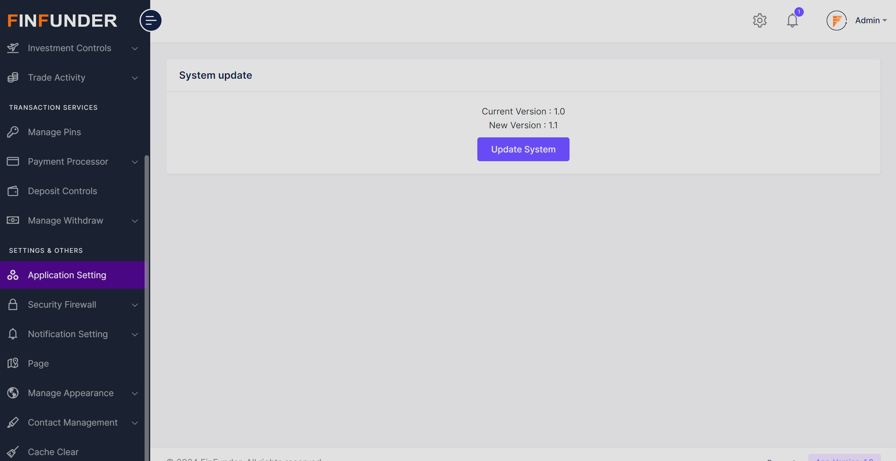
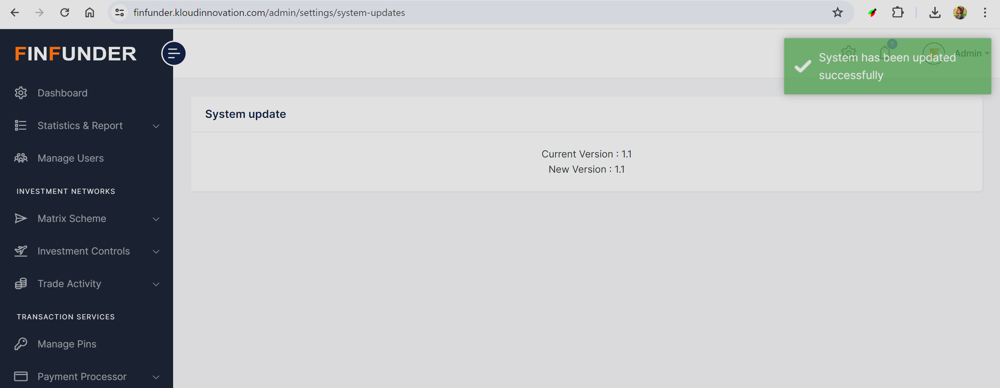
Application Setting
This menu allows an admin to configure settings for various basic settings under the general section, configure system settings, modfy and update commision & charges, configure KYC, Configure various plugins, check the system informations, get automation and controls for languages
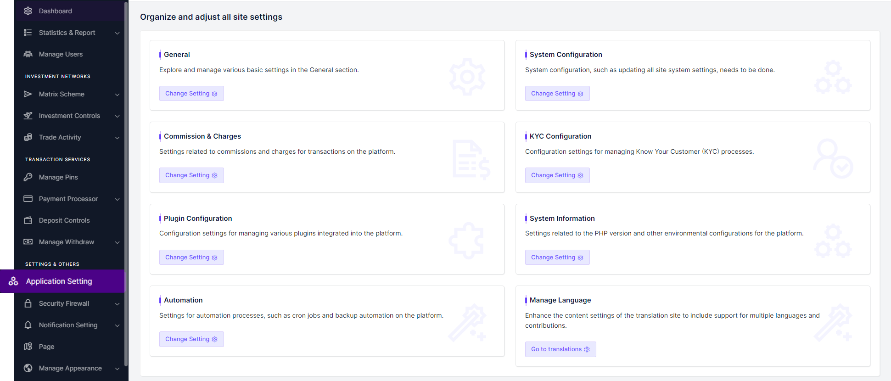
General
General Settings allows an Admin to configure a lot of basic features for the application. Here is a brief for each of them:
Basic Settings
Within the "Basic Settings" tab of the Admin Panel, administrators wield the ability to swiftly modify and update fundamental aspects of the trading software. This section provides a streamlined interface where administrators can adjust critical parameters including the site title, application timezone, currency code, currency symbol, contact information such as phone number, email, and address, pagination settings, and copyright text. Upon making alterations, administrators can seamlessly save the updated data with a simple click of the "save" button, ensuring that essential information is accurately reflected throughout the platform. This intuitive functionality empowers administrators to maintain currency, consistency, and relevance within the trading software, facilitating a seamless user experience while reinforcing brand identity and regulatory compliance.
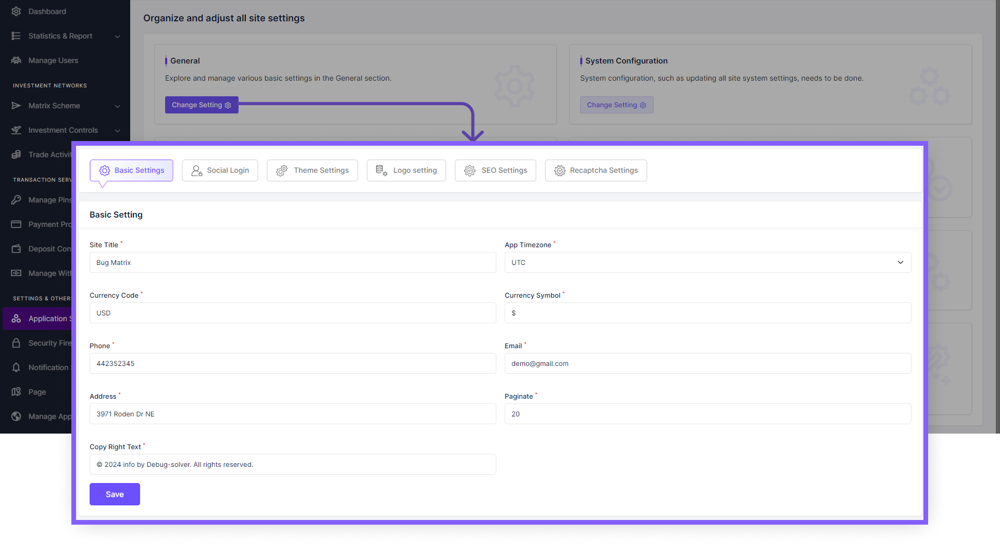
Social Login
To enable social login functionality for Google and Facebook, provide the respective Client ID and Client Secret in the fields below and click 'Save' to integrate.
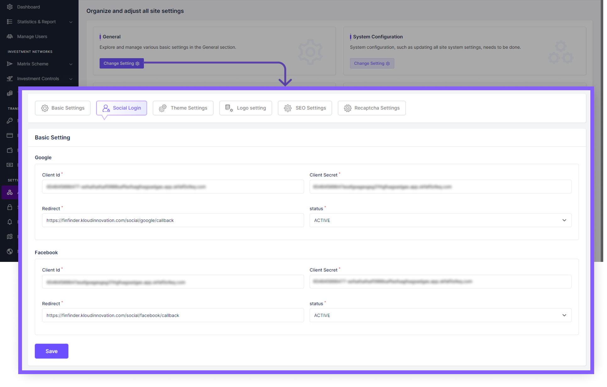
Theme Settings
To customize theme colors, specify Primary Color, Secondary Color, Primary Text Color, and Secondary Text Color, then click 'Save'.
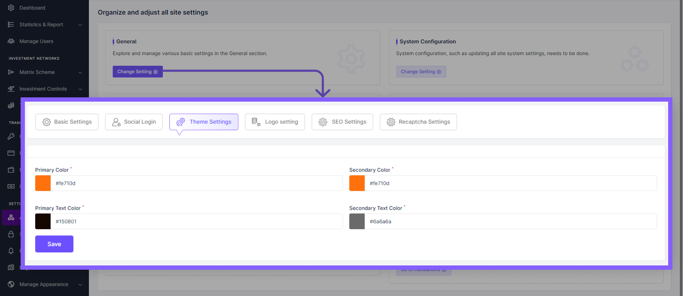
Logo Settings
To configure logo settings, upload images for Dark Background Logo, White Background Logo, and Favicon, then click 'Save'.
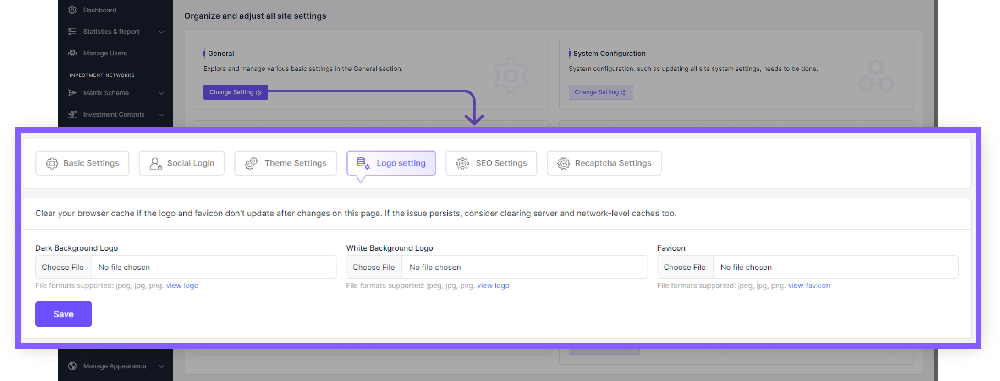
SEO Settings
To optimize SEO, input Title, upload an image, provide keywords, and write a description, then click 'Save'.
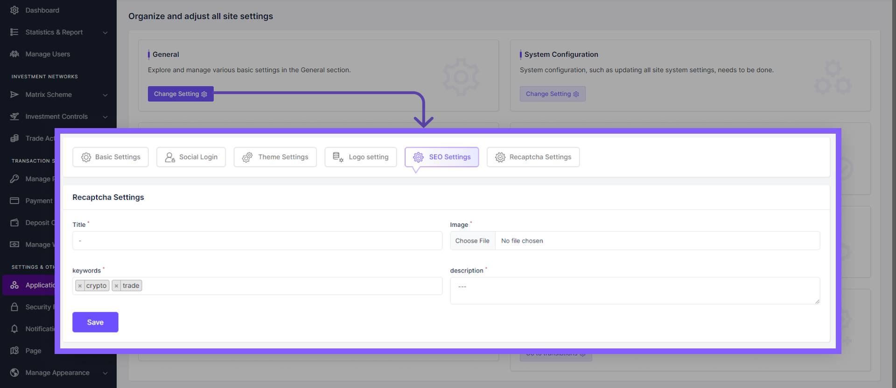
reCAPTCHA Settings
To set up reCAPTCHA, enter Key and Secret, then toggle options to enable reCAPTCHA for user registration and login, and click 'Save'.
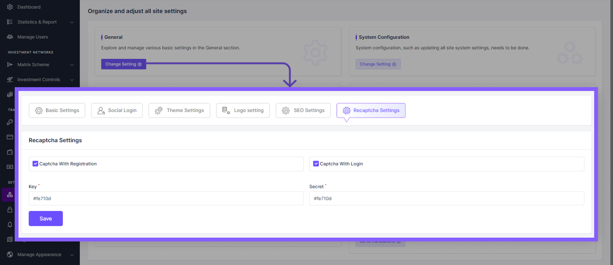
System Configuration
The "System Configuration" option offers toggle options to enable or disable various features like Balance Transfer, E Pin, Withdraw Request, and more, allowing administrators to customize system functionality to suit organizational requirements.
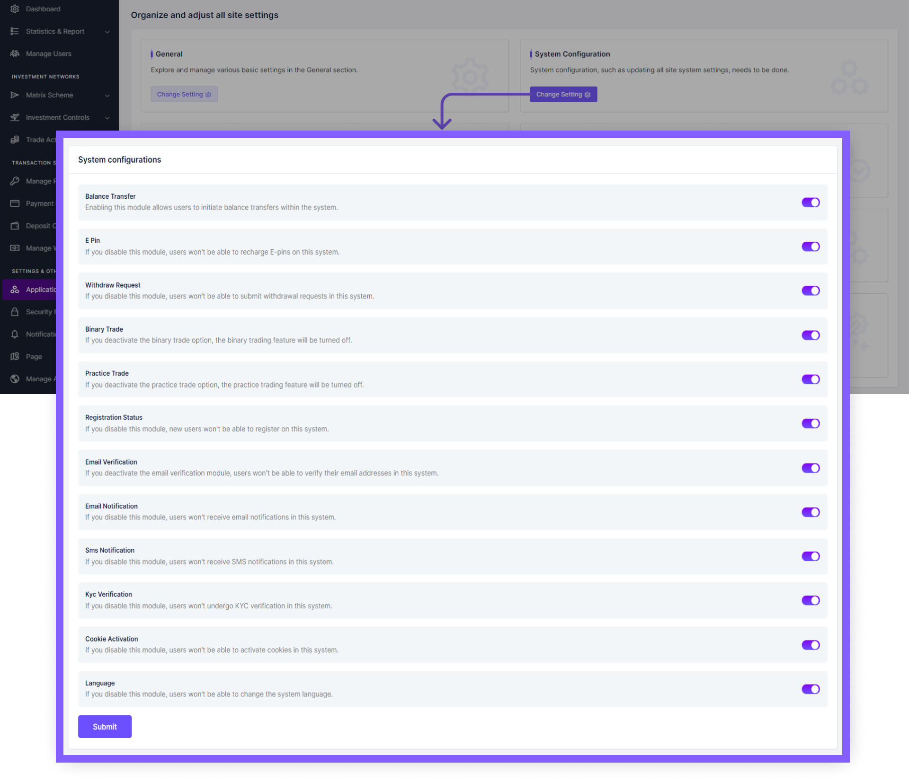
The available configurations
- Balance Transfer
- E Pin
- Withdraw Request
- Binary Trade
- Practice Trade
- Registration Status
- Email Verification
- Email Notification
- Sms Notification
- Kyc Verification
- Cookie Activation
- Language
Commission & Charges
By the help of 'Commissions & Charges' panel, admins can mopdify Investment Transfer Charge, Investment Cancel Charge, E Pin Charge, Balance Transfer Charge, Binary Trade Commissions, Trade Practice Balance. After modifications simply click on 'Submit' to save these informations.
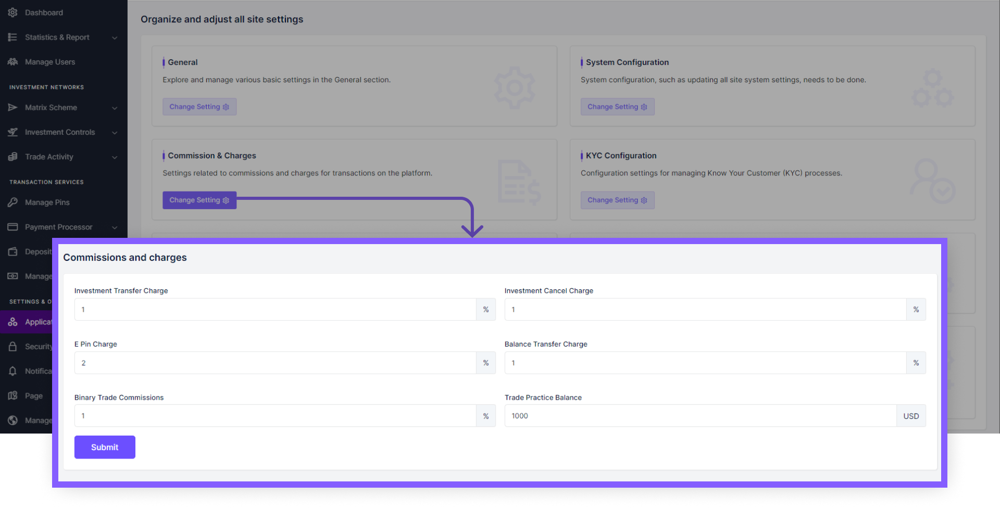
KYC Configuration
Navigate to the 'Application Settings' panel and select 'Change Settings' within the KYC Configuration section to access the 'Identity Verification Setup'. Here, administrators can tailor identity collection options by adding additional parameters. Users can be subjected to multiple conditions based on their specific identification requirements.
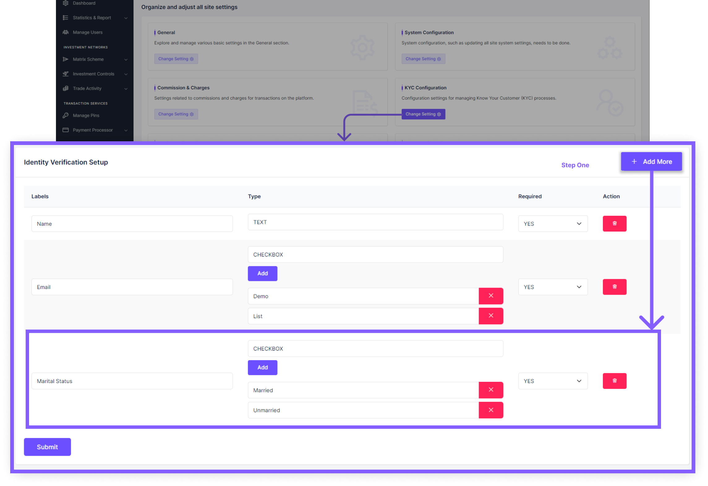
Plugin Configuration
Navigate to the 'Application Settings' panel and select 'Change Settings' within the Plugin Configuration section to access the plugin setup. Here, administrators can configur the plugins for Tawk.to, Google Analytics & HooryAdd the API key for the plugin you want to enable and click on 'Submit' to save. If you want to Activated the plugin just save the status as active and if you want to keep the plugin Inactive then save the status as inactive.
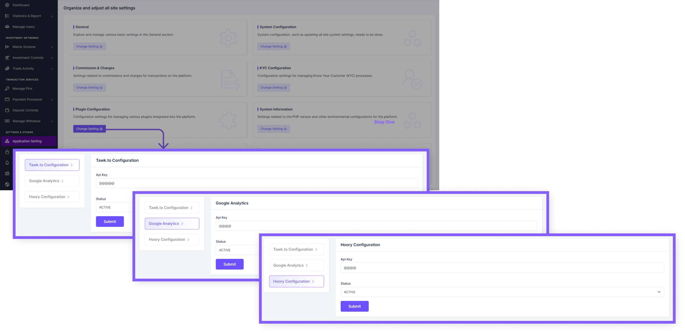
Automation
Navigate to the 'Application Settings' panel and select 'Change Settings' within the KYC Configuration section to access the 'Automation'. From here admin can get access to cron job url to enable the site's automation functionalities.
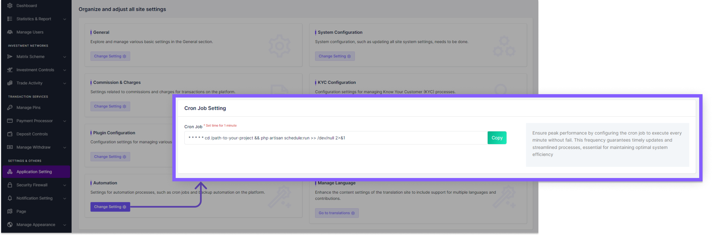
Manage Language
Navigate to the 'Application Settings' panel and select 'Change Settings' within the Manage Language section to access the 'Language Setup'. Here, administrators can add, update or delete languages per requirement.
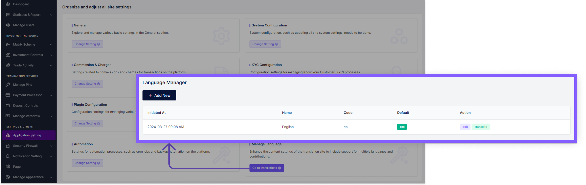
Add Language
Click on 'Add New' button and a dialog box will appear. Filling up the form with required information and clicking on 'Submit' will save the new language
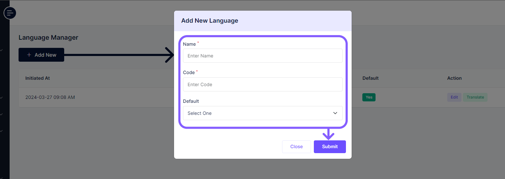
Edit Language keys for translation
To add translations for a specific lanuage click on 'Translate' then click the 'Add New' button. And add data to the dialog box, submit to save that key for translation.
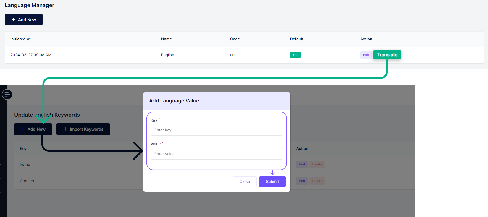
Import Language
To import keywords for a language, click on 'Import Keywords' then choose the language you want and click on submit
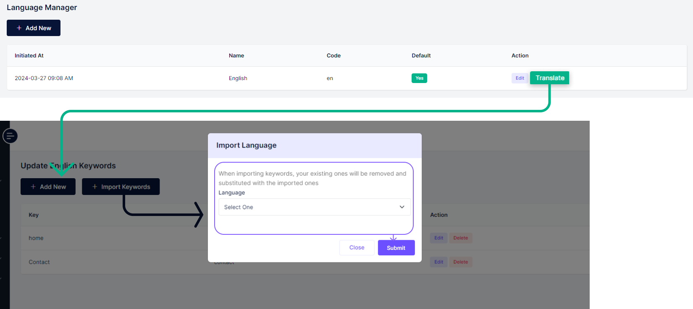
Security Firewall
In this section, administrators can configure the diverse security features of the application.
Settings
Within the 'Security Firewall' section, administrators can access the 'Settings' submenu to enhance the website's security. By clicking on this submenu, administrators are presented with a form where they can adjust parameters such as the total number of login attempts allowed within specified time periods. Additionally, administrators have the option to activate or deactivate this feature based on the current status.

Transaction Servicees
Within this section of the admin sidebar, administrators have access to menus dedicated to modifying various transaction-related services.
Manage Pins
In the 'Transaction Services' section, administrators can navigate to the 'Manage Pins' menu. Upon clicking, administrators are presented with a table displaying all available pins. To generate new pins, administrators simply click on 'Generate New Pins', fill out the form specifying the desired number of pins and their corresponding amounts, then submit the form to generate the pins.
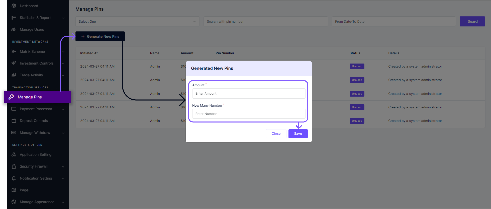
Payment Process
Transactions within the application can be conducted through two distinct methods. The automated process utilizes payment gateways to seamlessly complete transactions, while the manual process enables administrators to manually execute transactions without relying on a payment gateway.
Automatic Payment Process
Within the application, administrators have the option to select from a variety of available payment gateways. For this example, let's choose Coinbase. By clicking on 'Edit', administrators can input their own Coinbase credentials into the provided form. After filling out the form, simply click 'Save'. This enables users to seamlessly complete their transactions through the Coinbase gateway.
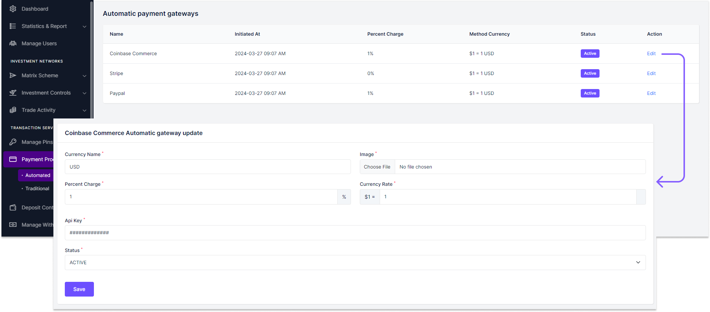
Manual Payment Process
Within the application, administrators can establish a manual payment gateway to track transactions conducted without using a gateway. To do so, navigate to the Payment Process menu, then select the 'Traditional' submenu. Click on the 'Add New Manual Gateway' button and complete the provided form. Upon filling out the form, click 'Save'. Users can now utilize this payment system to complete their transactions efficiently.
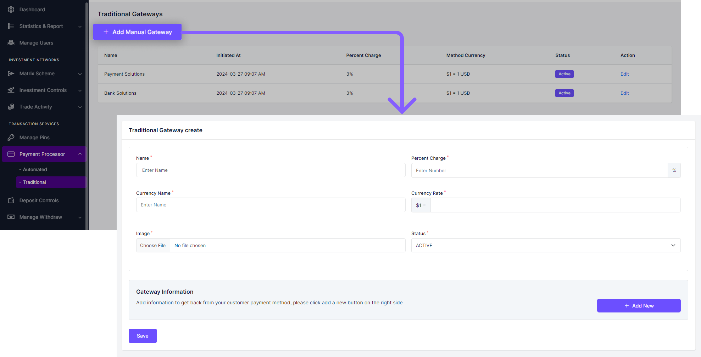
Manage Withdraw
In the 'Transaction Services' section, administrators can navigate to the 'Manage Withdraw' menu. Upon clicking, Admin can find a submenu called 'Gateway'. Clicking on it will reveal the list for available Withdraw Gateway Methods. To add a new withdraw method click on the 'Add New Method' button and fill up the form click on 'save' to save the withdraw gateway method.
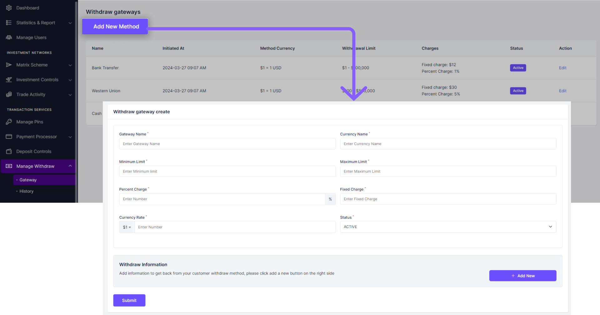
Matrix Scheme
To create a matrix scheme for users, administrators can access the 'Matrix Scheme' menu and expand it, then select the 'Scheme' sub-menu. Here, they are presented with two options at the top of the table: one to define the amount parameters and the other to create the plan itself.
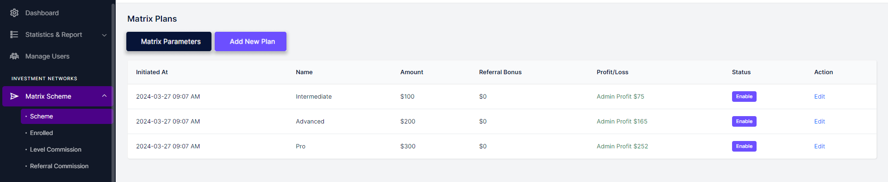
Matrix Parameters
In order to modify the height and width of the matrix, click on the Matrix Parameter button. Modify the values as needed then click on 'save'.
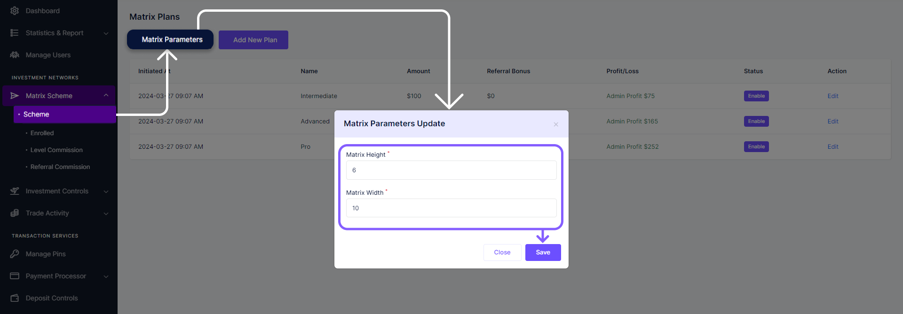
Plans
Admin can create new plans for their Matrix Schemes. Click on the 'Add New Plan' button. Fill up the form with necessary data. And add values for each Referral Commission.
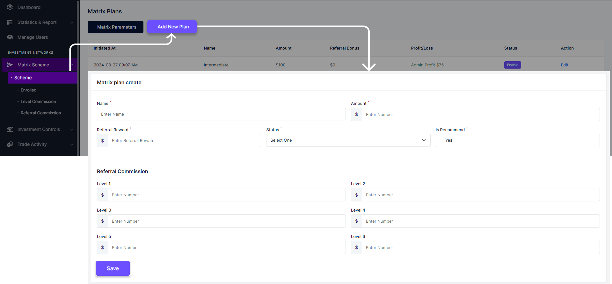
Note For Referral Comissions
The number of levels can be modified or updated by changing the parameter height and width in the
Matrix Parameters
Investment Controls
To create an investment scheme for users, administrators can access the 'Investment Controls' menu and expand it, then select the 'Plan' sub-menu. Here, Then click on the 'Add New Scheme' button. Fill up the form as per your liking. And click on 'Submit' to save the form.
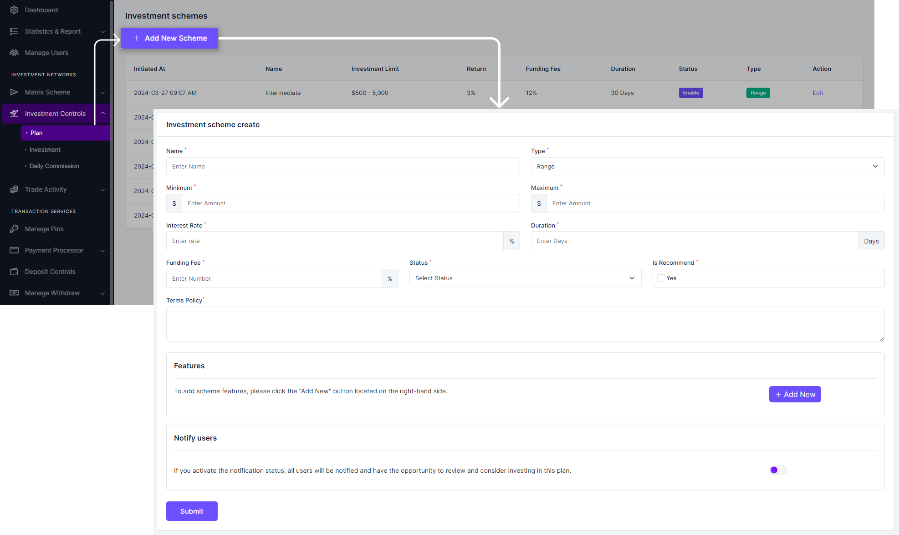
Investment Scheme Tip
Turn on the toggle within the Notify Users. To let them know about your new investment scheme.
Trade Activity
To add new parameters for Trading. Navigate to the Trade Activity and expand it. Select 'Parameter' sub-menu. Then click on the 'Add New Parameter' button from the page. Which will bring a dialog box. Choose time, unit and status and click on 'save'

Manage Appearance
To update the frontend from the Admin Panel, navigate to the Manage Appearance Menu. Here Admin can find each and every modification they can make to the frontend UI.
Appearance Tip
There is a 'Add New' button in a few sub menu forms. Clicking it will give admin additional cards to showcase their business ideas to customers more clearly in the frontend UI.
About Section
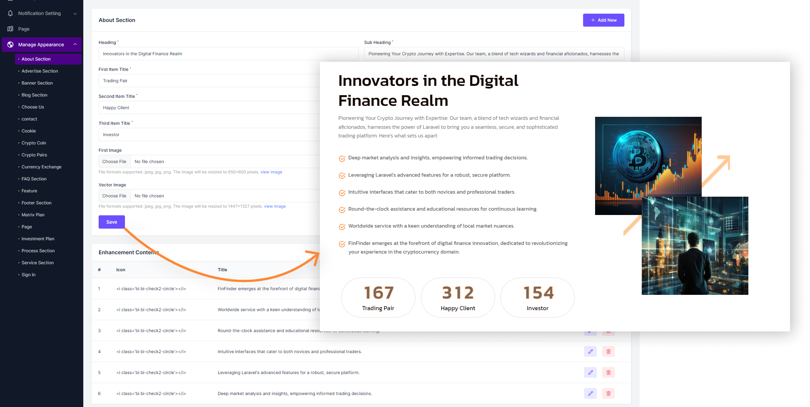
Advertise Section
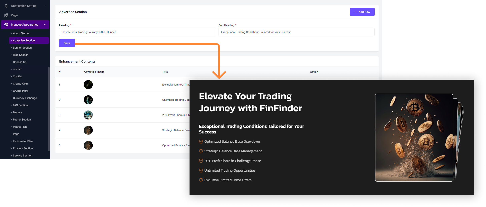
Banner Section
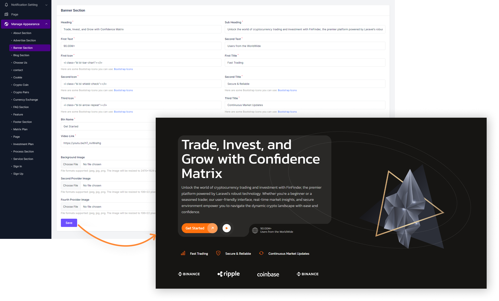
Blog Section
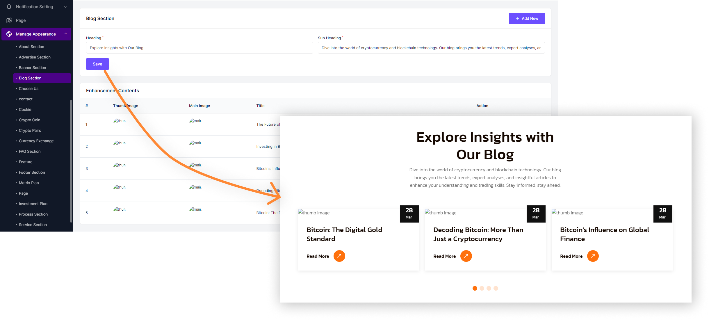
Choose Us
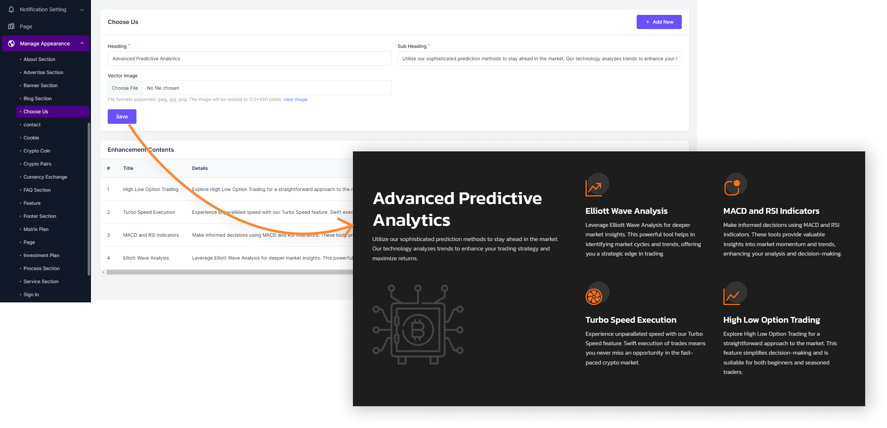
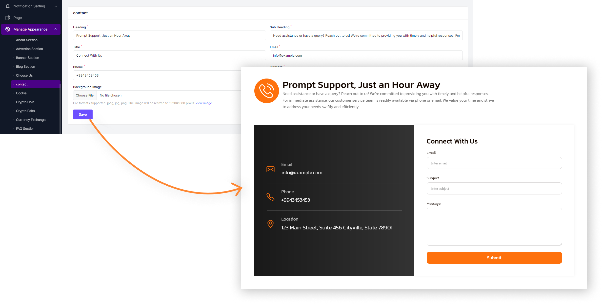
Cookie
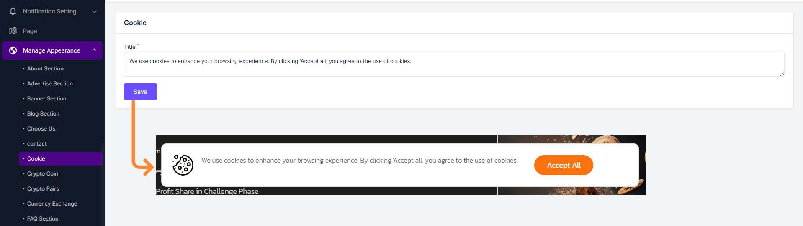
Crypto Coin

Crypto Pairs
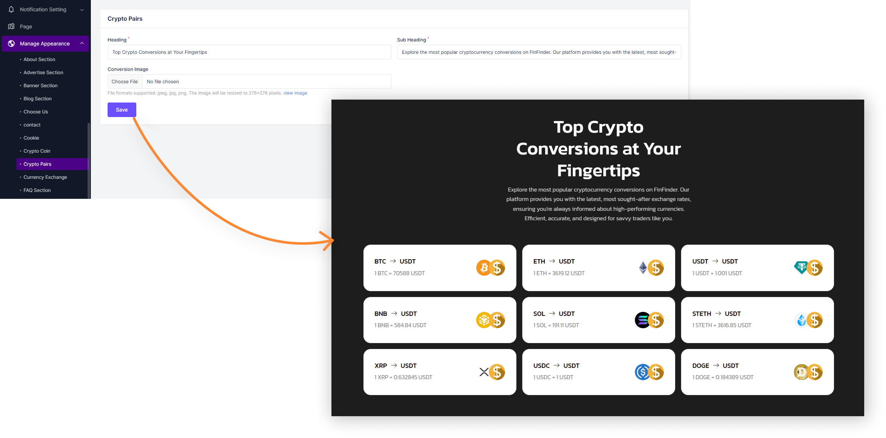
FAQ Section
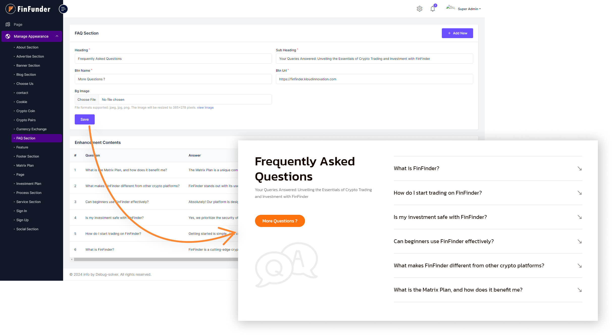
Feature
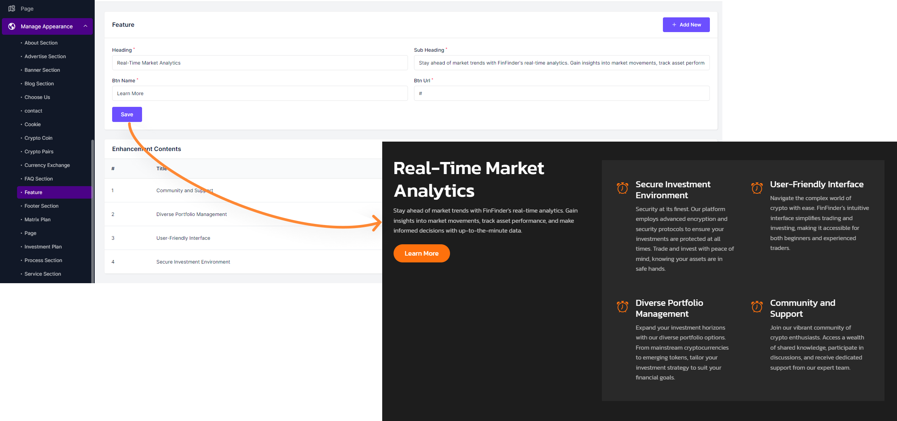
Matrix Plan
Page
Investment Plan
Process Section
Service Section
Sign In
Sign Up
Social Icon Section
Testimonial
Deposit Cash
Users can easily deposit funds into their FinFunder accounts using a variety of payment methods, including PayPal, Stripe, Coinbase, and two manual payment options. They have the flexibility to choose from three different wallets—Primary Wallet, Trade Wallet, and Investment Wallet—where they can allocate their deposited funds. This feature enables users to seamlessly add funds to their accounts, facilitating their participation in various investment schemes and trading activities offered by FinFunder.
Process:
To initiate a deposit, users navigate to the Deposit Menu in the sidebar. From there, they select their preferred gateway to allocate funds to a specific wallet. After entering the necessary information and completing the payment, the deposit process is finalized.
Wallet Top Up
Users have the flexibility to transfer funds from their trade and investment wallets to their primary account, facilitating easy withdrawal upon request. Additionally, users can seamlessly share funds with other users within the platform, enhancing collaboration and financial management capabilities.
Process:
To initiate a wallet balance transfer, users simply navigate to the "Wallet Top-Up" button located in the sections shown in the picture. Once there, they can effortlessly choose their desired wallet and allocate funds to the primary wallet. After that just click on save to transfer funds. Users can also choose a nother user to share funds which will take cash from their primary balance.
Matrix Scheme
The Matrix Scheme offers users an opportunity to earn commissions by referring others to the FinFunder platform. With a multi-level commission structure, users receive rewards for each referral they make, as well as for referrals made by those they've referred. This incentivizes users to expand their network and generate passive income through successful referrals.
Process:
To purchase a matrix plan, users navigate to the Matrix Menu in the sidebar. From there, they select their preferred plan and confirm the purchase. And that plan will be assigned for the user
Investment Scheme
The Investment Scheme provides users with various plans tailored to their financial goals. Users can invest within specified limits and durations, earning returns based on predetermined interest rates. With options suited for both beginners and experienced investors, the Investment Scheme offers a low-risk introduction to financial growth. Additionally, transparent terms and policies ensure users can confidently participate in investment activities within the FinFunder platform.
Process:
To purchase an investment scheme, users navigate to the Investment Menu in the sidebar then select the scheeme sub menu. From there, they select their preferred scheme and confirm the purchase. And that scheme will be assigned for the user
Trades
The Trade Feature empowers users to engage in cryptocurrency trading within the FinFunder platform. Users can place trades by specifying their desired amount and duration, with outcomes determined by market movements. Whether users anticipate gains or mitigate risks, this feature provides a dynamic environment for users to explore and capitalize on cryptocurrency markets. With intuitive controls and real-time insights, users can make informed decisions and optimize their trading strategies for potential profits.
Binary Trade:
To access the binary trade feature, users can effortlessly navigate to the "Trades" menu located in the sidebar. Upon arrival, they are presented with a comprehensive list of available cryptocurrencies. By selecting the desired cryptocurrency, users can proceed to initiate a binary trade by clicking on the trade button. From there, they input the amount, duration, and select an event outcome—either high or low—to execute the trade. This streamlined process ensures users can swiftly engage in binary trading activities within the FinFunder platform, facilitating efficient decision-making and market participation.
Practice Trade:
In order to use the binary trade feature, simply head on to the trades menu from the sidebar. Then Users will see a list of available crypto currencies. Then click on the practice button to do the practice trading.
Cash Out
Users can seamlessly request withdrawals of their available funds within the FinFunder platform. By navigating to the designated "Cash Out" section, conveniently located in the sidebar, users can initiate the withdrawal process. Following this, users input the desired withdrawal amount and select their preferred withdrawal method. Once the request is submitted, the admin reviews and processes the withdrawal request. Upon approval, users receive their funds via the chosen withdrawal method, ensuring a smooth and efficient cash-out experience.
Referrals
The Referral Program offers users the opportunity to earn rewards by referring new users to the FinFunder platform. Users can easily share their unique referral links with friends, family, or their network via various channels. When a new user signs up using the referral link, both the referrer and the new user receive benefits. The referrer earns commissions based on the activity of the referred user, while the new user can use the various features of the panel and they can refer other users as well. With a simple and intuitive referral process, users can leverage their networks to maximize their earnings and foster growth within the FinFunder community. (The commission relies on the Matrix Scheme )